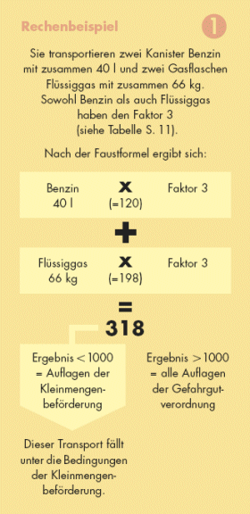
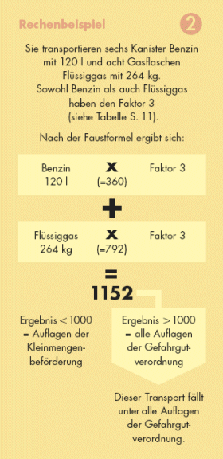

Transportieren Sie mehrere Gefahrstoffe auf einem Fahrzeug (zum Beispiel Benzin und Flüssiggas), kommen Sie nicht umhin zu rechnen. Nur so können Sie feststellen, ob sie alle Auflagen der Gefahrgutverordung beachten müssen oder nur die Bedingungen der Kleinmengenbeförderung. Zur Berechnung können Sie folgende Faustformel nutzen:

